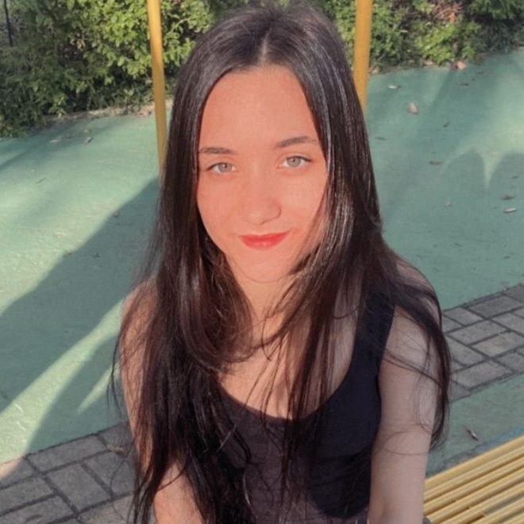

Meu nome é Yasmin Padilha, sou estudante de Análise e Desenvolvimento de Sistemas e atualmente estou no 4º semestre. Minha trajetória na tecnologia começou no final do ensino médio, quando tive meu primeiro contato com lógica de programação. A partir daí, iniciei alguns cursos e percebi que tinha muita afinidade com a área, principalmente por gostar de resolver desafios e por ter facilidade com matemática. Com isso, decidi ingressar na faculdade e aprofundar meus estudos em tecnologias que me permitissem atuar no desenvolvimento backend, como Python, Node.js e Java. Paralelamente, também venho me dedicando ao aprendizado de SQL e banco de dados, já que a área de Análise de Dados é outra que desperta grande curiosidade e interesse em mim.
Pretendo, após concluir minha formação em ADS, fazer uma pós-graduação em Estatística para ampliar meus conhecimentos em coleta e análise de dados. Meu objetivo é atuar como cientista de dados ou em áreas correlatas. Atualmente, meu maior foco é aprofundar meus estudos em Python e em outras tecnologias que contribuam para meu crescimento profissional e me permitam aplicar todo o aprendizado na construção de sistemas eficientes e bem estruturados.
